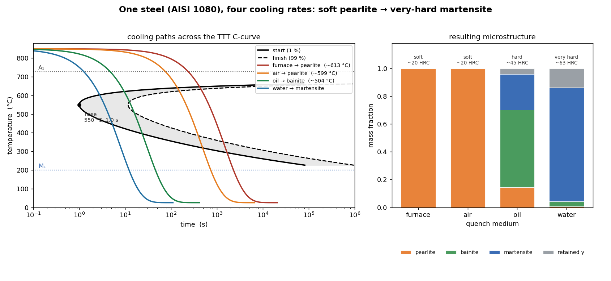
Four fates of one steel
One 1080 steel, four quench rates → pearlite → bainite → martensite — the C-curve mechanism beside the microstructure it produces.
python -m steel.demo_four_curves
Composition + cooling in, microstructure and properties out. Click any card to open its figure full-size, or copy its run command. Every surface of the simulator — visualizations, demos, experiments, and the notebook — in one place.
Each card runs one python -m steel.<name> demo, prints its validation table, and banks the figure shown. Needs only .[viz].
The composition × cooling sweep below, the back-end interactive what-if app (streamlit run steel/app.py) — pick a grade, quench, and section size and watch the microstructure move — its front-end ore→billet twin (streamlit run steel/app_making.py), and the defect-consequences app (streamlit run steel/app_consequences.py).
Two narrative teaching paths with sliders. New here? Open the back-end notebook (cooling curve → microstructure), read "Start here — the 30-second mental model", then go top to bottom — or its front-end making notebook (ore → billet → and what goes wrong).
Suggested first pass: demo_four_curves → demo_jominy → demo_sweep → demo_tempered_jominy, then branch by interest. Install & launch commands are in the README; the physics and validation behind each demo are in steel/README.md.

One 1080 steel, four quench rates → pearlite → bainite → martensite — the C-curve mechanism beside the microstructure it produces.
python -m steel.demo_four_curves
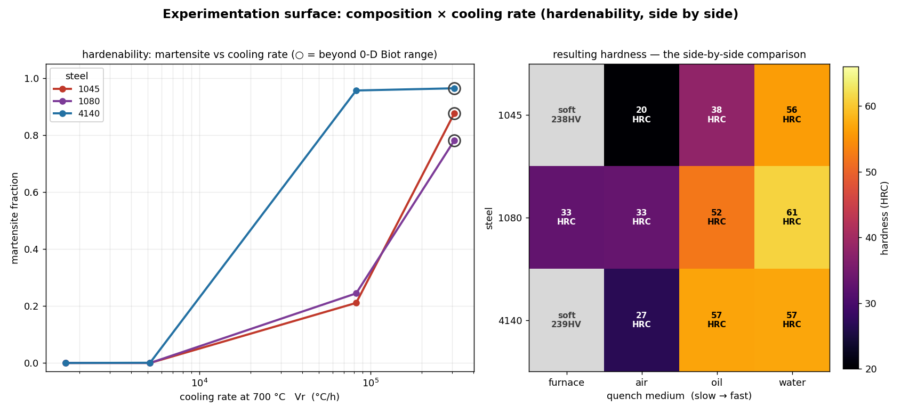
Every composition against every cooling rate, side by side — the hardenability axis the four-curves view can't show. This is the experimentation surface; the app makes it interactive.
python -m steel.demo_sweep
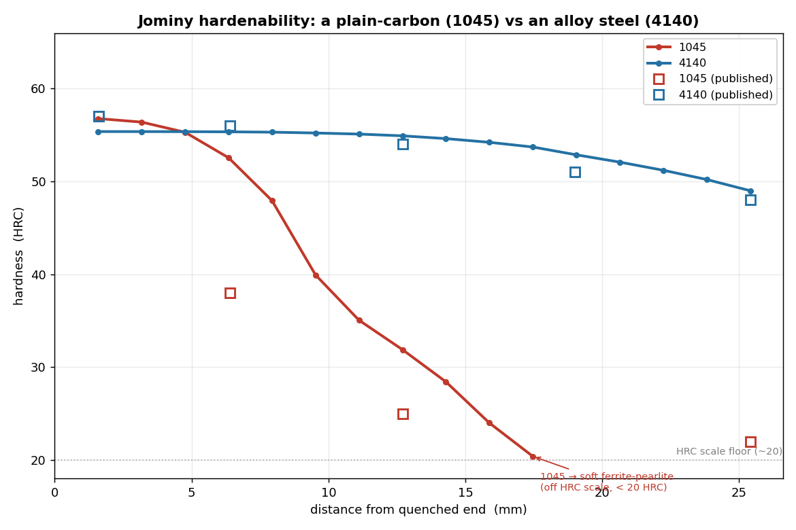
One end-quench bar: shallow-hardening 1045 against deep-hardening 4140, hardness versus depth from the quenched end.
python -m steel.demo_jominy
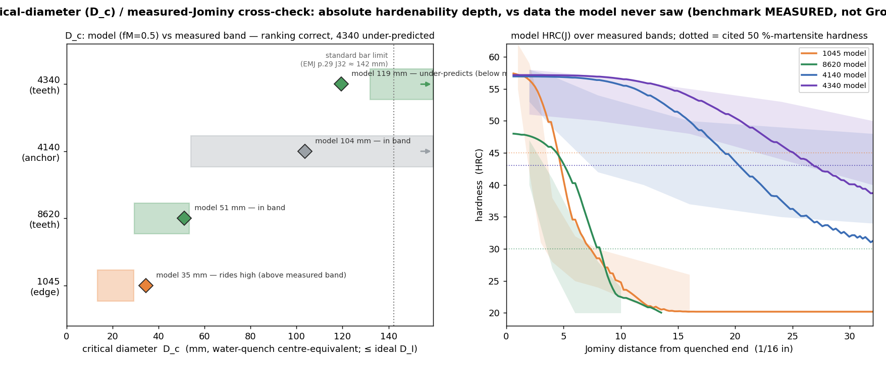
Critical diameter read *from* the model against measured H-band data — does it rank the steels' hardenability in the right order?
python -m steel.demo_ideal_diameter
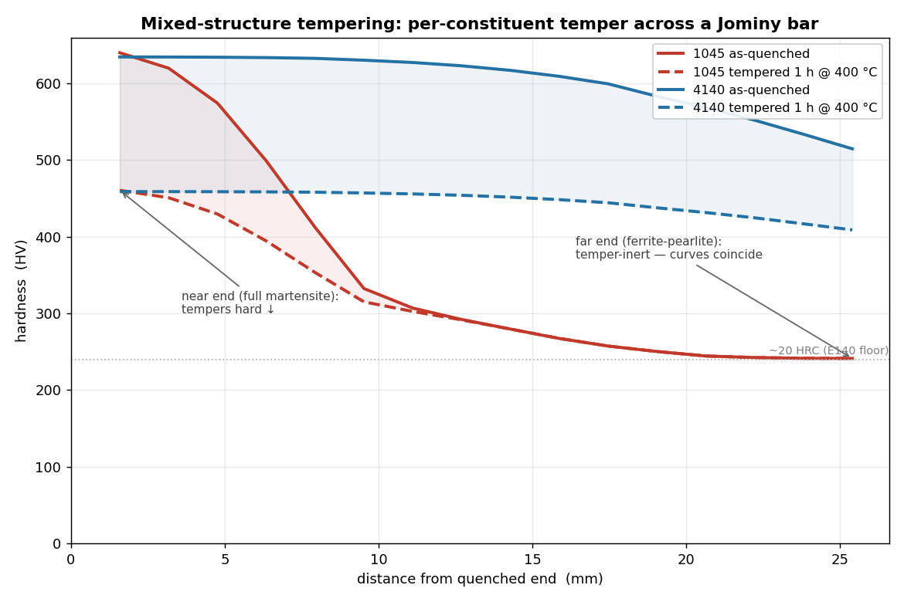
A *tempered* Jominy traverse — per-constituent temper of a mixed structure, not a single hardness knocked down by one number.
python -m steel.demo_tempered_jominy
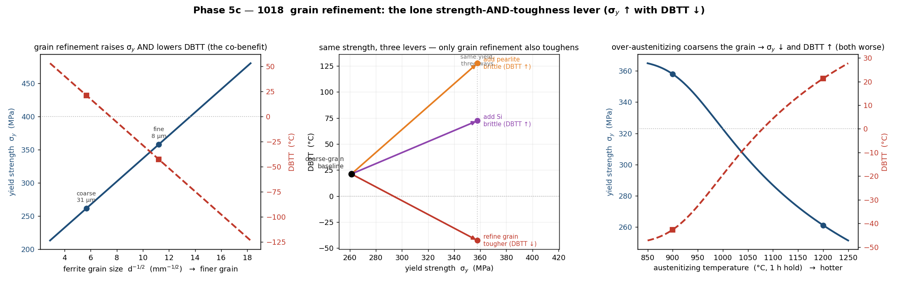
Grain refinement — the lone lever that raises strength *and* toughness at once (same Hall–Petch form, opposite grain-size signs).
python -m steel.demo_grain
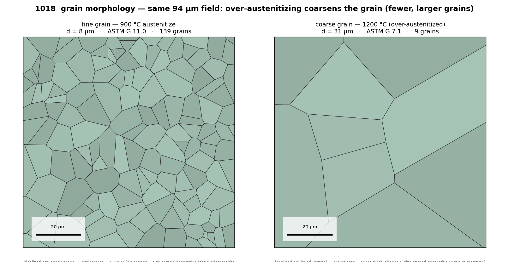
Those two grains drawn to scale — a size-accurate microstructure swatch beside the schematic.
python -m steel.demo_grain_morphology
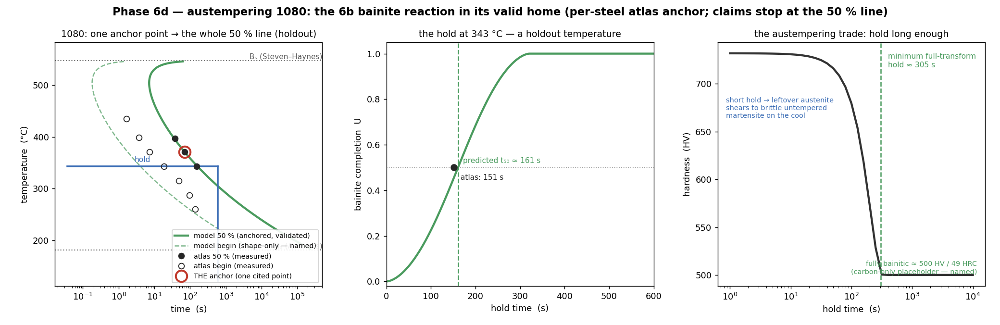
Quench past the nose, hold isothermally inside the diagram, grow bainite — the atlas-anchored isothermal hold.
python -m steel.demo_austemper
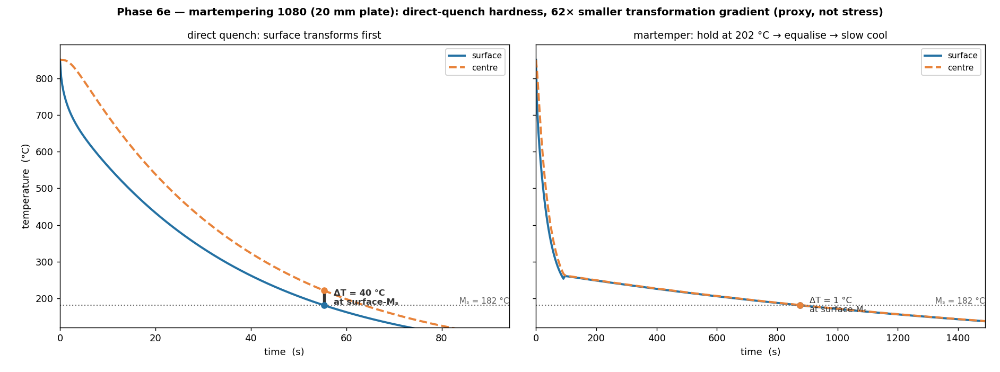
The same hardness as a direct quench, far less distortion — the surface−centre temperature gap closed before the martensite forms.
python -m steel.demo_martemper
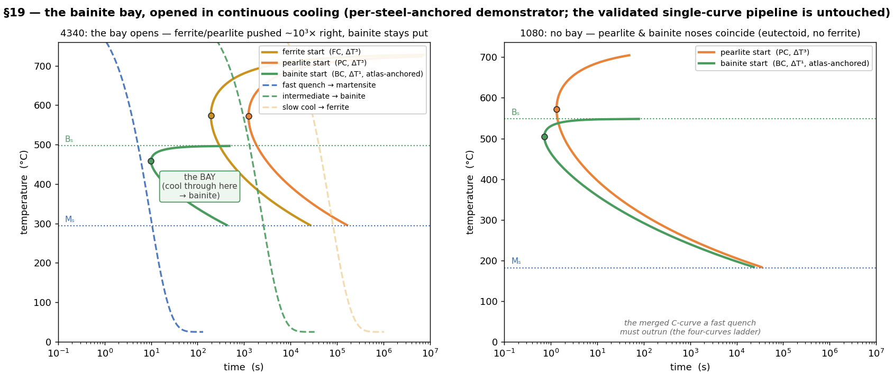
The bainite bay *opened* in continuous cooling — three competing reactions (ferrite / pearlite / bainite) raced on one shared austenite pool.
python -m steel.demo_unified_kv
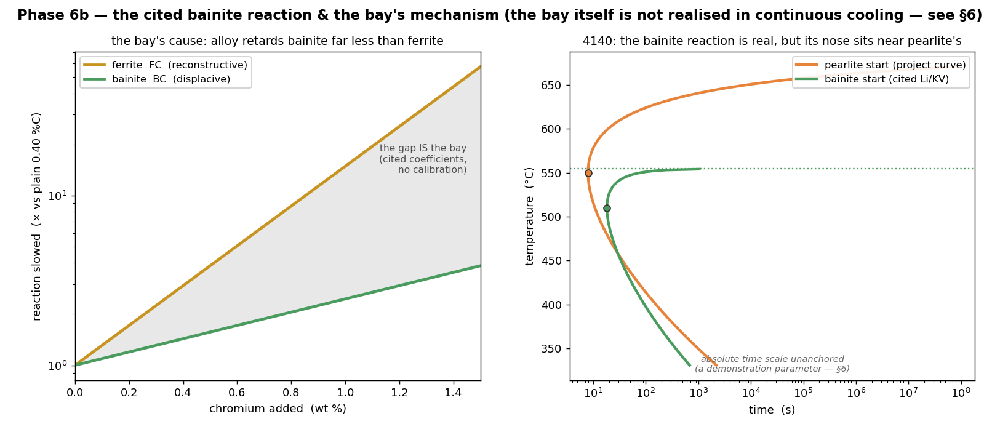
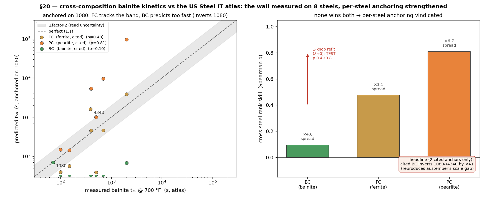
Does any cited composition factor predict bainite kinetics *across* steels? Eight atlas steels say no — the per-steel-only wall, measured and quantified (not just asserted), and the alloy-vs-carbon diagnosis behind it.
python -m steel.demo_cct_validation
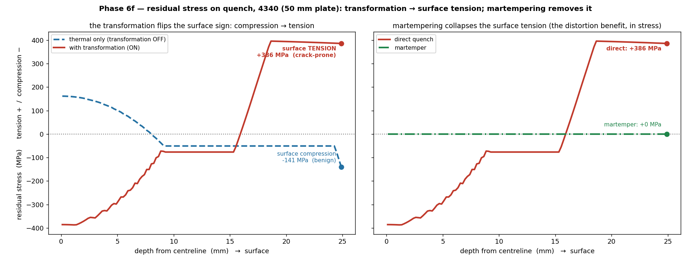
The residual stress and distortion a quench locks into a section — the solid-mechanics axis (incremental elastic–perfectly-plastic, transform dilatation and all).
python -m steel.demo_residual
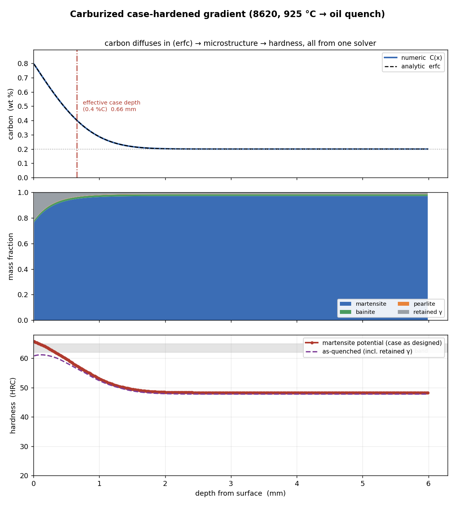
A carburized gear tooth: carbon diffused in at the surface, case hardness profiled out — the same sealed engine as Jominy, a mass-diffusion face.
python -m steel.demo_carburize
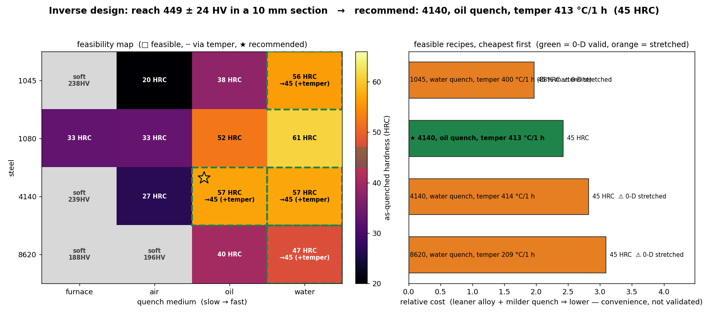
Run the simulator backwards: name a target hardness, get a feasible recipe — grade, quench medium, and temper.
python -m steel.demo_design
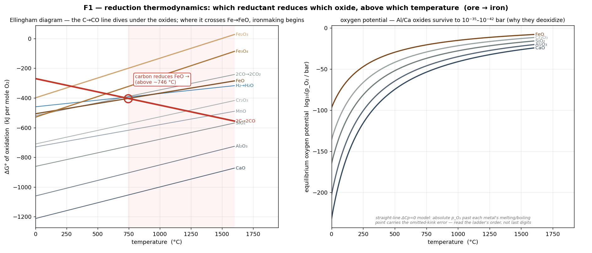
The front end begins: which reductant pulls the oxygen off which oxide, above which temperature. The carbon→CO line dives under the iron-oxide lines at ~750 °C — where ironmaking begins — and the oxygen-potential ladder shows why Al and Ca deoxidize a steel bath that Fe, Mn, Si cannot.
python -m steel.demo_reduction
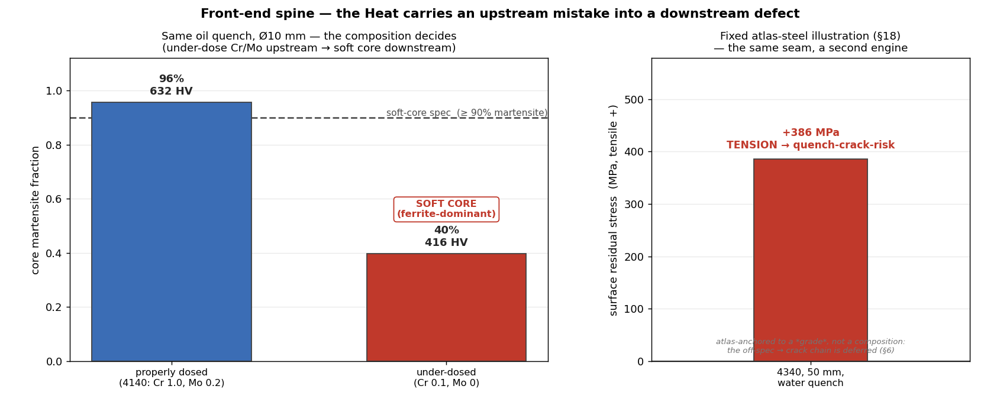
The spine that lets steps compose: a Heat record threads through the back end, and an upstream alloy mistake (under-dosed Cr/Mo) propagates into a downstream defect — the same oil quench that through-hardens a proper 4140 leaves a soft, ferrite-dominant core, flagged on the Heat. Not a scripted failure — the back-end martensite fraction crossing a spec line.
python -m steel.demo_heat_state
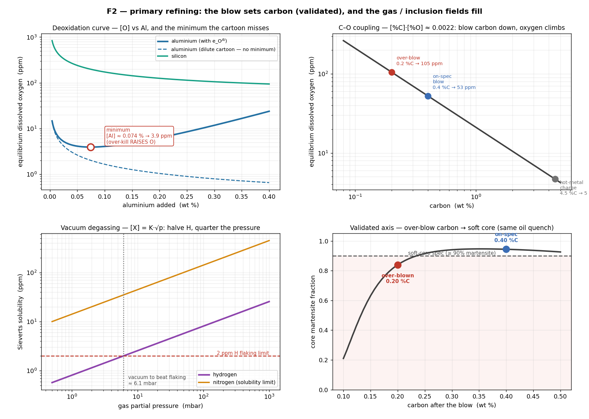
The middle of the chain: blow carbon-saturated hot metal to the grade's carbon, kill it with aluminium, vacuum-degas. The blow's carbon is the one output the validated back end consumes — over-blow and the same quench leaves a soft core (a real refining mistake, a real downstream consequence). Alongside, the dissolved O / H / N and inclusion fields the Heat carried empty are filled: the deoxidation curve with its minimum, the C–O coupling, and Sieverts √p degassing.
python -m steel.demo_refining
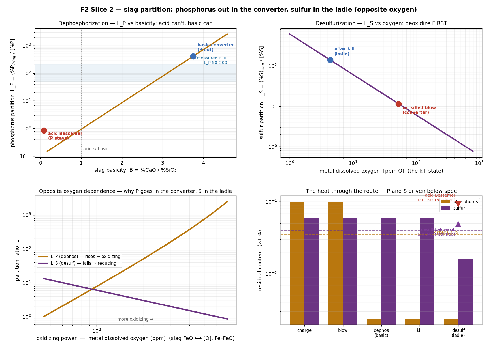
The second half of refining: the two tramp impurities the blast furnace leaves in, partitioned into slag. The headline is the opposite oxygen dependence — dephosphorization wants the oxidizing converter (L_P rises with slag FeO), desulfurization wants the reducing ladle (L_S falls with dissolved oxygen) — two independently sourced correlations whose opposite signs dictate the process order. It reproduces the purity-control history: acid Bessemer can't dephosphorize (rails crack), Thomas' basic lining can, and sulfur only comes out once the heat is killed. P/S are carried but inert in the back end — the chemistry is benchmarked, the embrittlement consequence deferred.
python -m steel.demo_slag
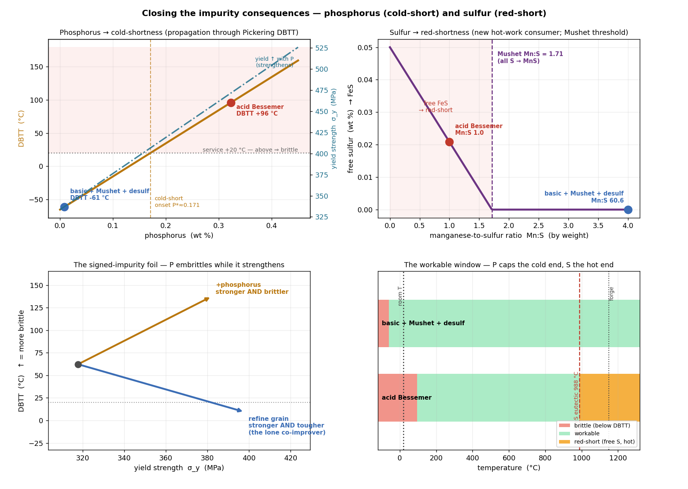
What the tramp impurities finally DO. The same high-phosphorus, sulfurous pig iron, made into cracking steel by the acid Bessemer process and into sound steel by the basic process + Mushet's manganese + ladle desulfurization. Phosphorus threads the existing Pickering DBTT law (it strengthens AND embrittles — the signed foil) so the off-spec heat is brittle in the hand; free sulfur forms a Fe–FeS grain-boundary film above the 988 °C eutectic so it tears when forged (Mushet's manganese ties it as benign MnS). Together they bracket the workable temperature window — the consequence F2's slag partition set as state, now closed: phosphorus by propagation through the toughness law, sulfur through a new hot-working verdict.
python -m steel.demo_impurity_window
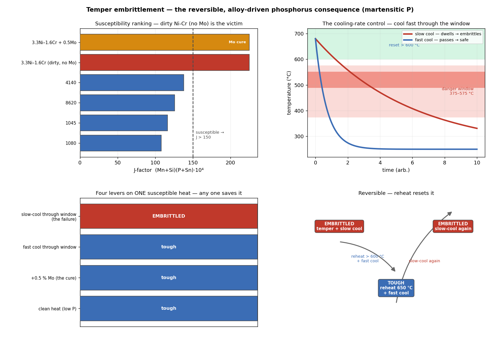
Phosphorus' OTHER consequence — the quench-and-tempered (martensitic) path, completing its coverage (cold-short was the ferritic one). A dirty Ni-Cr forging with residual phosphorus and no molybdenum, slow-cooled through ~375–575 °C, segregates phosphorus to the prior-austenite grain boundaries and fractures intergranularly. Four independent cures: a fast cool through the window, molybdenum (the classic remedy for susceptible Ni-Cr forgings), a clean heat, or a reheat above 600 °C (the reversibility that names it). The Watanabe J-factor ranks susceptibility — in the registry only the dirty Ni-Cr victim clears the threshold; 4140/8620 are safe by low J, not their sub-threshold Mo. No strict tooth — the segregation-C-curve-nose gate was run on paper and could not be pinned (a tractable model is ~100× too fast and underdetermined; the faithful nose needs Fe₃P-cluster kinetics, out of scope), so the model was not built to manufacture one.
python -m steel.demo_temper_embrittlement
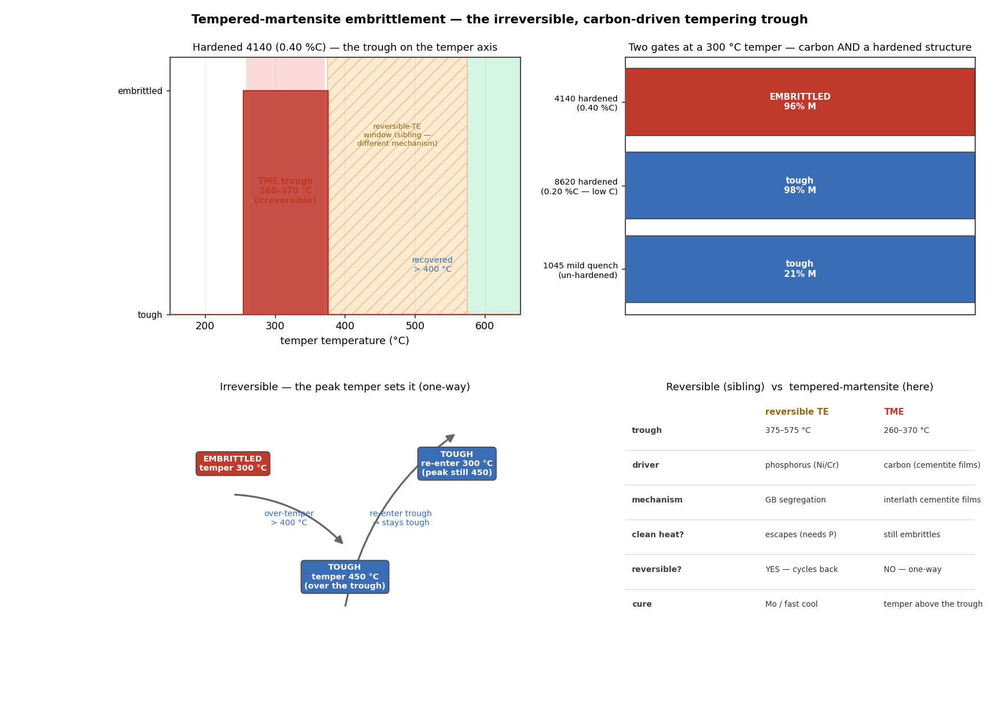
Reversible temper embrittlement has a sibling on the SAME tempering axis — and the two are opposites. Temper as-quenched martensite in 260–370 °C and cementite precipitates as films along the interlath / grain boundaries (fed by retained-austenite decomposition); toughness drops into a trough. It is carbon-driven, not impurity-driven — so a *clean* medium-carbon steel still embrittles, where the reversible one needs phosphorus — and it is ONE-WAY: temper above ~400 °C and it recovers, but re-entering the trough cannot restore the film (the carbide morphology is set by the peak temper). Two gates, on the same frozen quench the spine uses: 4140 embrittles, 8620 (0.20 %C) is immune even fully hardened, and a section that did not harden has no tempered martensite to embrittle. No strict tooth — the trough-from-carbide-kinetics gate was run on paper and failed (the repo carries no stage-III carbide thermodynamics), so no carbide model was built to manufacture one; the trough window and the ~400 °C recovery are cited, the carbon gate and verdict rule by-construction.
python -m steel.demo_tempered_martensite_embrittlement
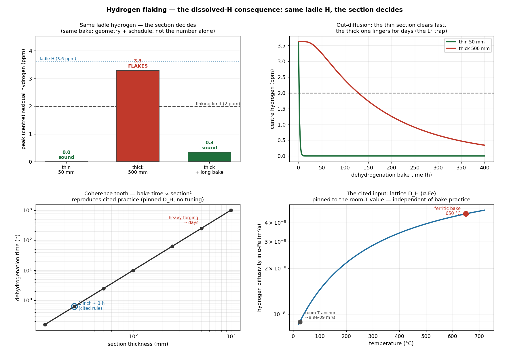
What dissolved hydrogen finally does — and why it is a *geometric* consequence, not a number. Refining fills the ladle hydrogen and flags the chemistry-state risk; whether a *part* flakes (internal hairline cracks) is set by whether the hydrogen can diffuse out before the section cools into the brittle range. Same 4140 heat at ~3.6 ppm, two sections, same dehydrogenation bake: the thin section degasses and is sound, the thick one traps it and flakes — and a long enough bake saves the thick one (the time scales as section²). Two-tier, like cold-short/red-short: refining sets the risk, this the consequence. Closed-form slab desorption (Crank) — no engine, no ADR. One genuine tooth: the bake time from an independently-pinned lattice D_H reproduces cited practice without tuning — a 500 mm forging → ~10 days (heavy forgings → days, the load-bearing anchor; the 1 h/inch thin-section rule is OoM sanity only) — OoM-grade; the L² scaling and verdict are by-construction.
python -m steel.demo_hydrogen_flaking
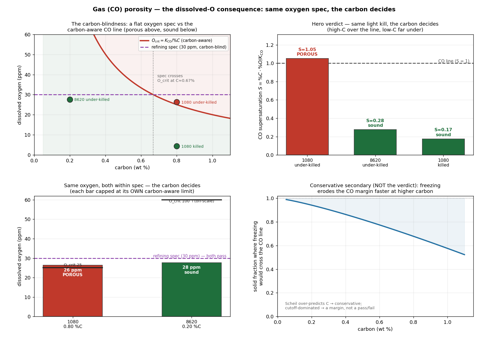
What dissolved oxygen finally does — and why it is a *carbon-aware* consequence, not a single number. Refining flags a carbon-blind risk (O > 30 ppm); whether a *casting* blows CO holes is set by the carbon the oxygen reacts with: gas evolves where [%C]·[%O] crosses the same CO equilibrium the converter runs on. Same light kill, two carbons, both within the 30 ppm spec: the high-carbon 1080 sits right on the CO line (limit ~25 ppm) and blows holes — carrying *less* oxygen than the sound low-carbon 8620 (limit ~100 ppm). A full kill saves it (the deox lever). Two-tier, like cold-short/red-short/flaking: refining sets the risk, this the consequence — and the two disagree because of carbon. No engine, no ADR, and honestly **no claimable tooth** (the criterion is the cited C–O equilibrium against held composition); the soft OoM note is 'high-C must be killed, low-C can be rimmed' from O_crit ∝ 1/C, no tuning. The solidification CO-margin is a conservative secondary (Scheil over-predicts carbon), not the verdict.
python -m steel.demo_gas_porosity
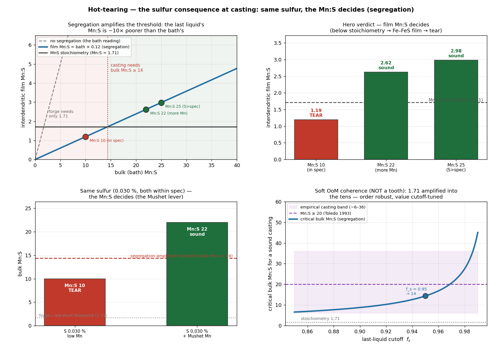
What residual sulfur does at the *casting* stage — the segregation-amplified sibling of forging-stage red-shortness. Slag flags a flat, Mn-blind risk (S > 0.040 %); whether a *casting* grows a Fe–FeS interdendritic film and hot-tears is set by the Mn:S in the **last liquid to freeze**, which is Scheil-enriched — sulfur piles up ~10× faster than manganese, so the film Mn:S is ~10× poorer than the bath. Two heats, same sulfur (both within spec, both clearing bulk MnS stoichiometry): the lower-Mn one (Mn:S 10) tears because its film falls to ~1.2, the higher-Mn one (Mn:S 22) stays sound — the Mushet lever again, only the threshold is in the *tens*. Distinct from red-short by **phase + time** (interdendritic liquid during freezing vs bulk solid at the forge — castability ≠ forgeability), not duplicated. No engine, no ADR, and **no claimable tooth** (the verdict is cited Scheil partition feeding cited MnS stoichiometry); the soft OoM note is that segregation amplifies the stoichiometric 1.71 into the tens — reproducing the empirical 'castings need Mn:S ≳ 20' rule (Toledo 1993) with no tuning, order-robust but cutoff-tuned. The RDG/feeding driver and the carbon-peritectic contribution are named deferrals.
python -m steel.demo_hot_tear
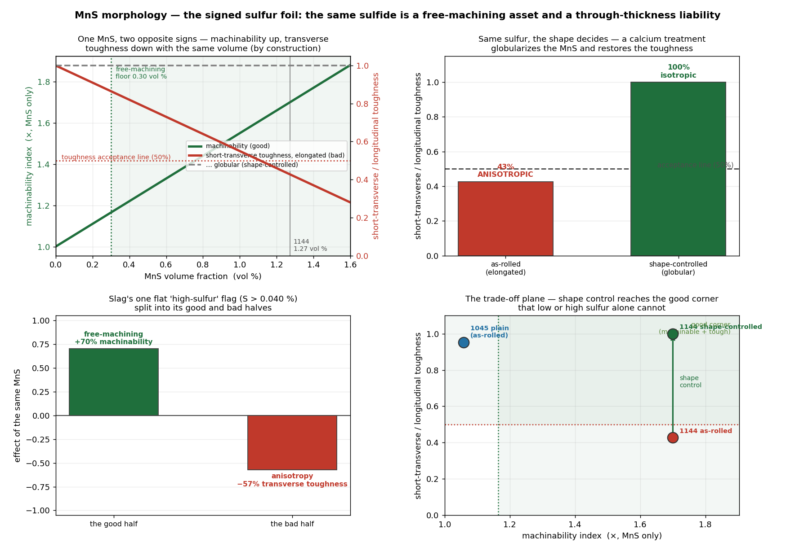
The same manganese sulfide is signed: a deliberate **free-machining** asset (the reason the resulfurized 11xx grades exist — MnS breaks the chip) *and* an unintended **through-thickness toughness** liability (hot working elongates the plastic MnS into stringers that gut the short-transverse direction). Slag raises one flat, shape-blind `high-sulfur` risk (S > 0.040 %) that fires on every free-machining grade by design; this **splits** it into its good and bad halves. The hero: one resulfurized 1144-type heat read two ways — as-rolled it is free-machining **and** anisotropic; a calcium treatment globularizes the MnS and it is free-machining **and** isotropic, the same sulfur, the same MnS *volume* — only the shape changed (the lever is the shape, not the sulfur, which is why the anisotropy flag is gated on **morphology**, never an S-threshold). A plain low-S heat is tough but cannot free-machine — the other end of the trade. The worked-product sibling of forging-stage red-shortness (it reads the *tied* MnS, where red-short reads the *free* sulfur). No engine, no ADR, and **no claimable tooth**: the MnS amount is cited stoichiometry, its volume a cited density ratio, the two verdicts by-construction; 'one MnS, two opposite signs' is the pedagogical point, by construction. The machinability index is the MnS contribution only (hardness/carbon and Pb/Ca/Te confound the real rating); the transverse debit is its own directional axis (not the hardness toughness proxy or DBTT). Stringer aspect ratio (∝ rolling reduction) is a named ceiling.
python -m steel.demo_sulfide_morphology
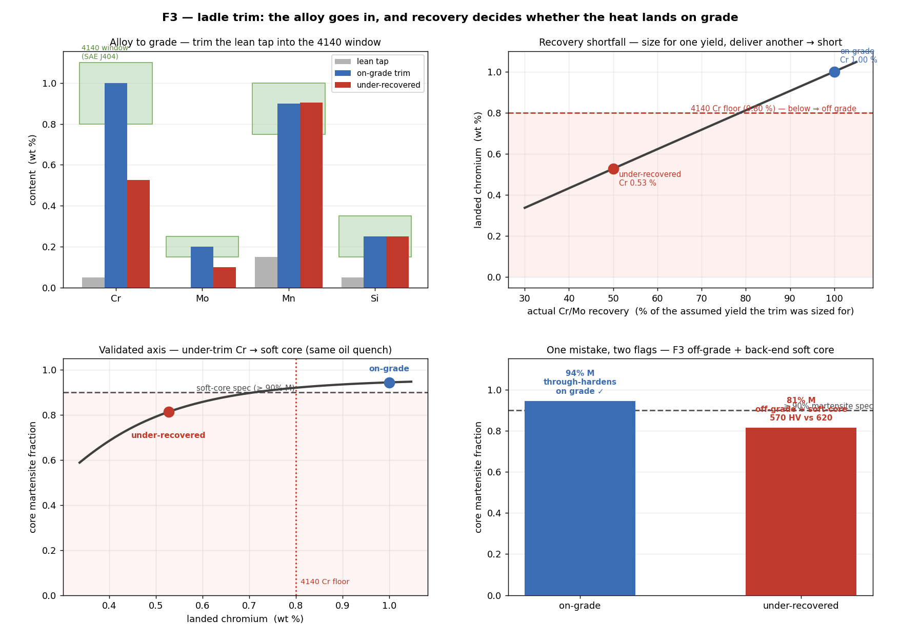
The seam to the back end: trim an alloy-lean tap up to a grade by ferroalloy additions, sized for an assumed recovery. A bath that under-delivers (Cr/Mo recovery halved) lands below the cited 4140 window — F3 flags off-grade — and the same oil quench that through-hardens the on-grade heat leaves a soft core. One ladle mistake, two flags: the front-end early warning and the validated back-end consequence — the hero-demo's off-spec input, produced rather than hand-set.
python -m steel.demo_ladle
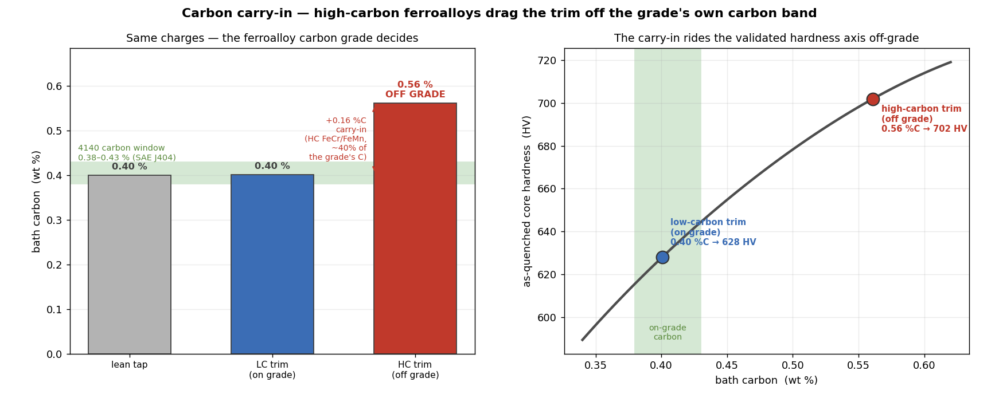
A *second* ladle mistake beside the recovery shortfall: the carbon the ferroalloys carry. One alloy-lean 4140 tap, one set of charges sized to reach grade (identical assay/recovery either way) — but mixed in with cheap high-carbon (charge-grade) ferrochrome/ferromanganese (6–8 % C) the bath picks up ~+0.18 %C and lands at ~0.56 %C, **off-grade on its own carbon band** and a harder steel (~700 HV vs the on-grade ~625). The refined low-carbon grades carry the same trim without the pickup — *this is why low-carbon ferroalloys exist*. The verdict is off-grade fired on the carbon band through the same window machinery (no new flag); the hardness rise is the validated back end consuming the carry-in carbon — propagation colour, not a second pass/fail line. No engine, no ADR, and **no claimable tooth** (mass-balance on cited assays); the ~40 %-of-the-grade's-carbon magnitude is an order-of-magnitude coherence note. Carbon recovery taken ~full; deox-state-dependent recovery is now its own panel (next); P/S bands stay deferred.
python -m steel.demo_carbon_carry_in
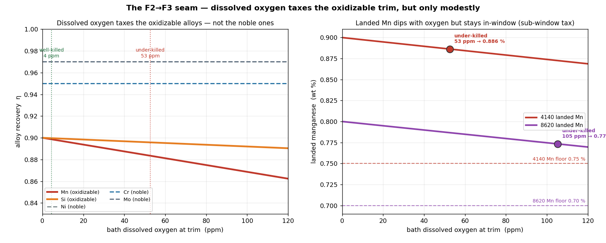
The seam that closes the ladle module's last named deferral: where demo_ladle *hand-set* the recovery shortfall and demo_carbon_carry_in turned on the ferroalloy carbon, this one turns on F2's **deox state**. Trim the same charges into a well-killed bath (Al-killed, O ~4 ppm) and Mn/Si recover in full; trim them into an under-killed one (a weak, insufficient kill — O ~53 ppm, **porosity-risk**) and the dissolved oxygen ties up a stoichiometric mass of the oxidizable additions as oxide, so Mn/Si land short — while the noble Cr/Mo/Ni land identically (**selectivity**: the tax falls only on the alloys that deoxidize). The magnitude is honest and **modest** — even a fully under-killed bath taxes Mn only ~2 % at 4140's carbon (~4 % at 8620's lower carbon, which sits at higher dissolved O), so the landed Mn dips but stays *in-window*: the dissolved-O coupling alone cannot trip off-grade — quantitatively why demo_ladle's gross under-trim hero must be hand-set. The carbon→oxygen→tax coherence ties F2's C–O coupling straight into F3 recovery (kill-before-you-trim matters most where carbon is lowest). No engine, no ADR, and **no claimable tooth** (conservation arithmetic on cited oxide stoichiometry; the gross slag-FeO reoxidation distribution is the named ceiling). The only flag is F2's porosity-risk.
python -m steel.demo_deox_recovery
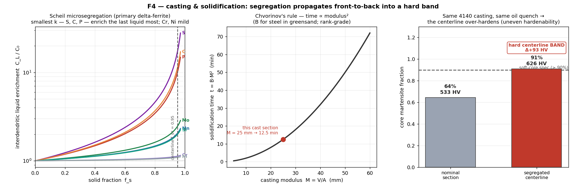
The chain closes front-to-back: cast a billet and Scheil microsegregation enriches the last-to-freeze centerline (S, P, C the worst), so the *same* casting heat-treats non-uniformly — the enriched centerline over-hardens into a hard band the bulk never reaches. A real front-end engine produces the Heat the validated back end consumes. Chvorinov solidification time alongside.
python -m steel.demo_casting
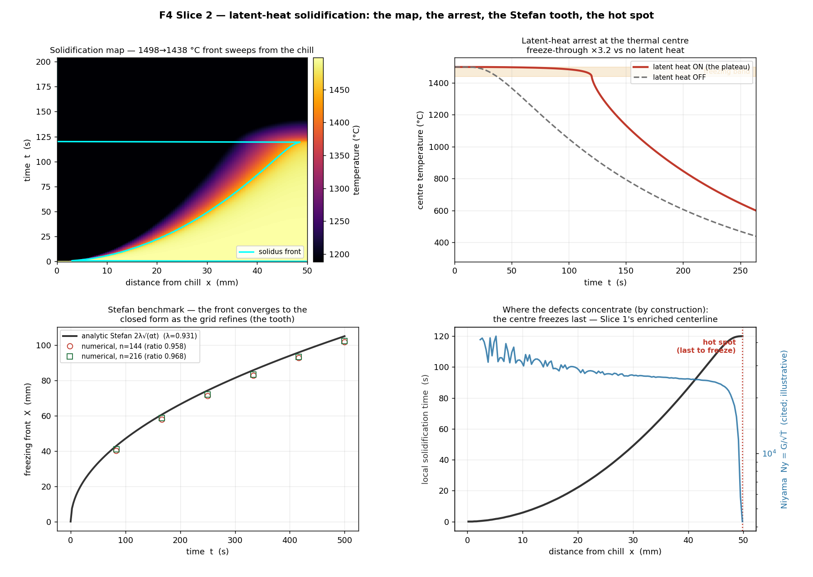
Casting's deferred half (F4 Slice 2): the latent-heat temperature field of a section freezing against a chill, solved on the *same sealed heat engine* (enthalpy method, no engine touch). The iconic solidification map, the latent-heat arrest at the thermal centre, and — the headline tooth — the numerical freezing front *converging to the analytic one-phase Stefan closed form* 2λ√(αt) under grid refinement, conservation exact. The insulated centre freezes last (the shrinkage hot spot — the same centerline Slice 1 enriches); the cited Niyama criterion collapses there. Stefan match is the validated tooth; the Niyama/hot-spot reads are by-construction.
python -m steel.demo_solidification
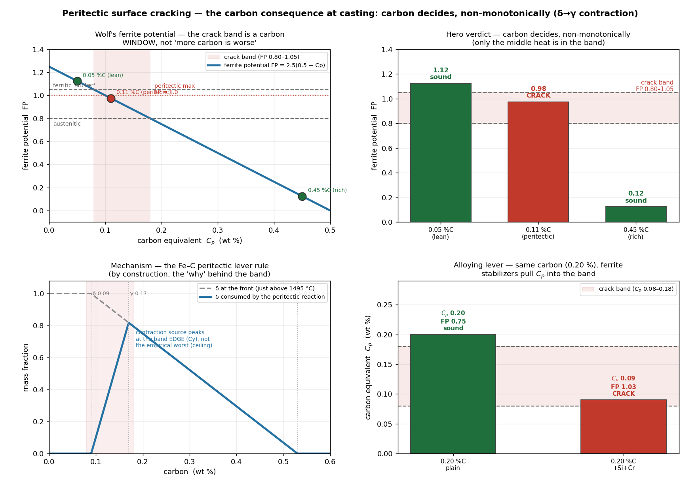
The carbon-driven sibling of sulfur hot-tearing: the peritectic transformation L + δ → γ is a BCC→FCC volume contraction that, concentrated high in the continuous-casting mould, shrinks the thin shell off the wall into longitudinal facial cracks — so the hypo-peritectic ~0.10–0.16 %C grades are the worst surface-crackers, and counter-intuitively a *leaner* OR a *richer* steel casts more soundly. Three plain-carbon heats, carbon the only axis: 0.05 %C (fully δ, sound), 0.11 %C (Wolf's ferrite potential in the depression band, cracks), 0.45 %C (austenitic, sound) — *more carbon is safer*. The verdict is Wolf's cited FP = 2.5(0.5 − Cp) band (0.8–1.05); the mechanism is the Fe–C peritectic lever rule (cited invariants 0.09/0.17/0.53 at 1495 °C, by construction). Reads NOMINAL carbon (the shell phenomenon), the *reverse* of hot-tear's last-liquid read. A second lever: same 0.20 %C, ferrite stabilizers (Si+Cr) pull Cp into the band — alloying decides. No engine, no ADR, and **no claimable tooth** (cited classifier + by-construction lever); the soft note is a coherence (carefully *not* independent — both rest on the Fe–C peritectic): the lever rule and Wolf's empirical FP place the trouble at the same ~0.1 %C window. The consumed-δ peaks at the band edge (Cγ 0.17), not the empirical worst — the exact worst-carbon needs δ→γ kinetics + shell mechanics (underdetermined).
python -m steel.demo_peritectic